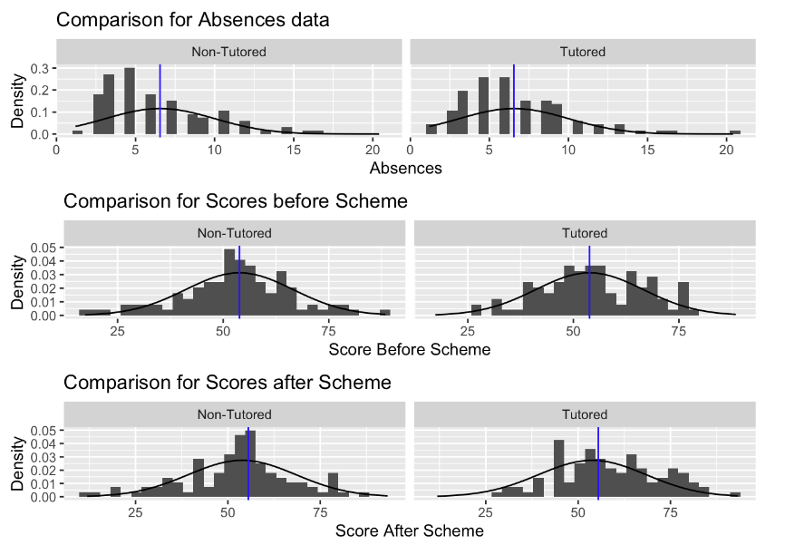
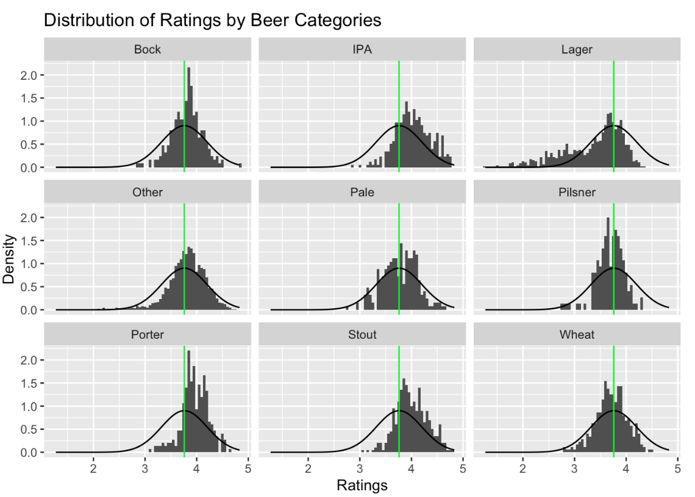
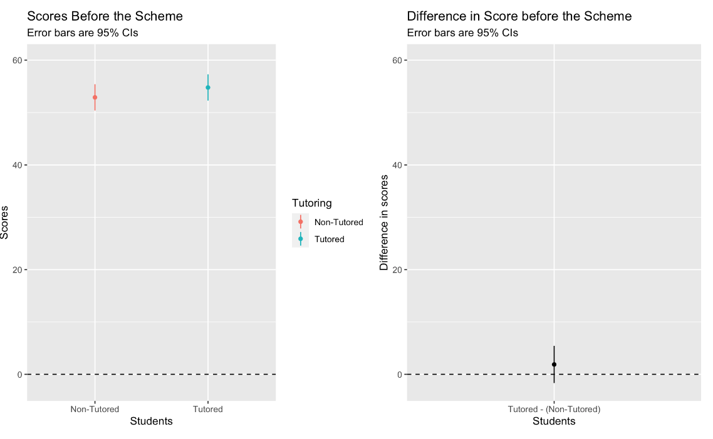
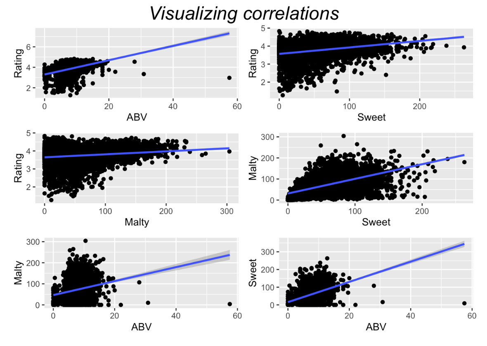
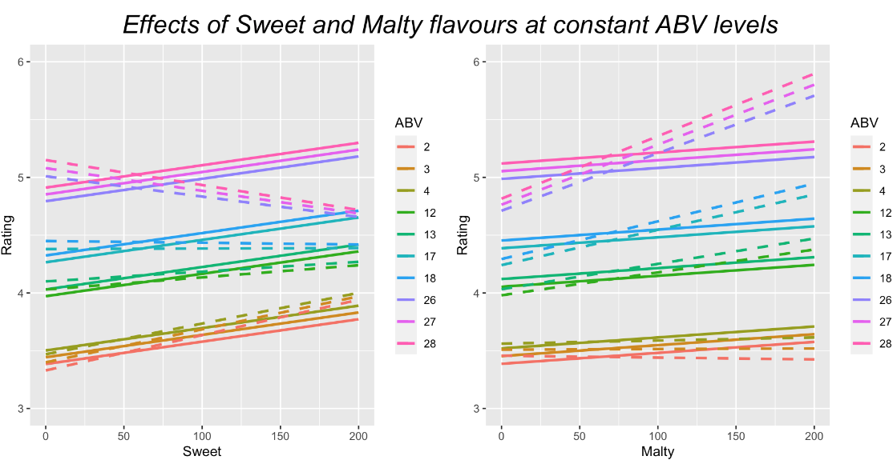
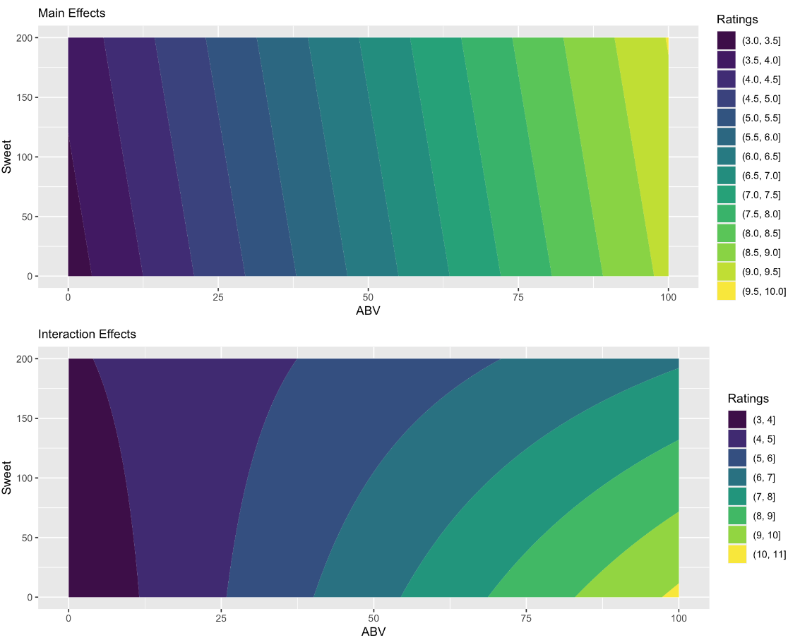
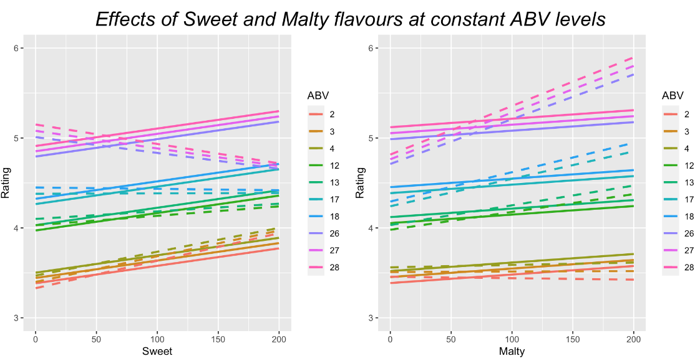
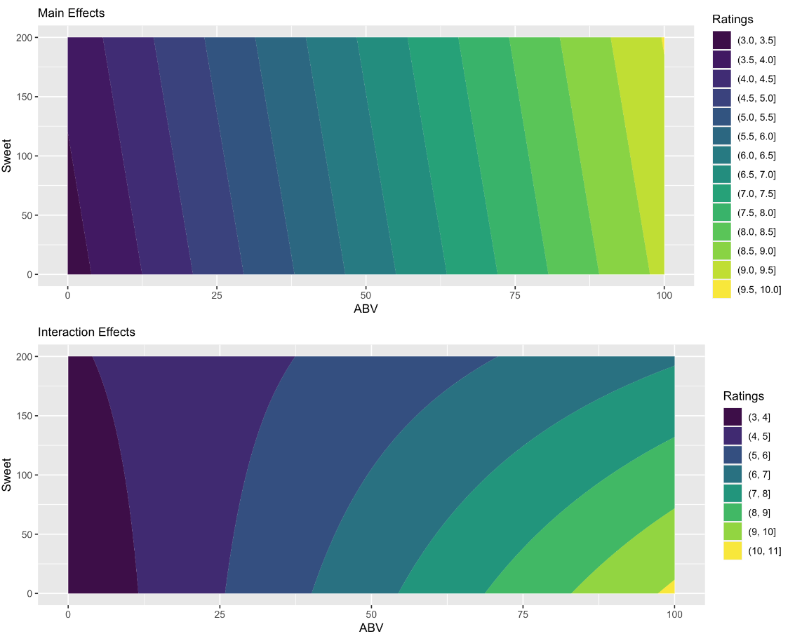

Portfolio
Projects
Educational
Statistical Analysis on Tutor Scheme initiative and Beer Data
General Information
Part 1
A high school implemented a buddying system where older students spent time tutoring some of the younger students. The students in the younger classes were selected at random. All students were tested at the beginning of the academic year and at the end. For all students, their attendance in regular classes was monitored and is given in the absences variable as a proportion of class time that was missed.
The project examines the students’ scores and sees whether the tutoring scheme had an effect. It also checks whether the students allocated to the tutored and non-tutored groups had similar or different average test scores before the tutoring scheme began. The areas investigated include:
- Did the tutored and non-tutored students have similar or different rates of absences on average?
- Did the tutored students show an increase in their scores compared to the students who did not receive tutoring?
- Was there any effect of absences on the change in scores, and did this have any interaction with the effect of tutoring?
Part 2
This is a consulting project for a beer manufacturing company, which would like to know is whether certain types of beers tend to receive higher ratings than others. For the purpose, beers in the dataset are categorizes by the following general categories:
- IPA
- Lager
- Porter
- Stout
- Wheat
- Pale
- Pilsner
- Bock
Subsequently, the company has a new product that it is designing. It wants to know what properties will help it to get a high rating. The company would like to know whether, on average, a beer receives a higher rating if it has a higher or lower ABV. In addition to this (i.e. to be examined using separate/additional analysis) the company would like to know if having more or less Sweet or Malty elements in the flavour results in higher or lower ratings. This is examined in an analysis that includes the variables ABV, Sweet, and Malty.
The company is given insights in regards to the following:
- Do the results suggest that beers with higher or lower ABVs should have different flavours if the company is trying to maximise ratings
- What flavourings should the company use more/less of if they are creating a high ABV beer
- What flavourings should the company use more/less of if they are creating a low ABV beer
Features
- T-testing
- Variable interaction
- Significance Testing
- Null Hypothesis Testing
- Difference Testing
Some of the highlights and visualisations of the project are as follows:
    


